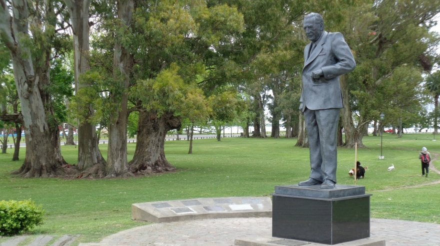
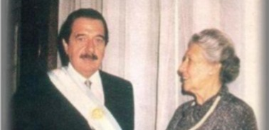
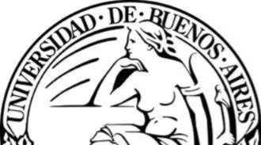
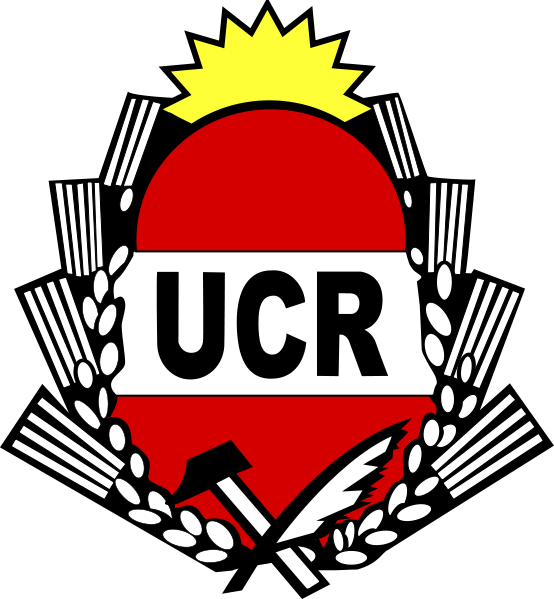
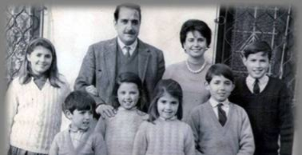
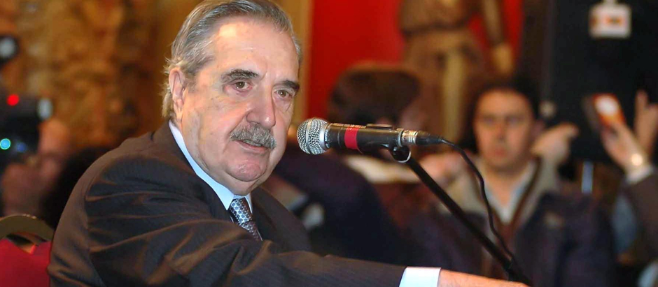
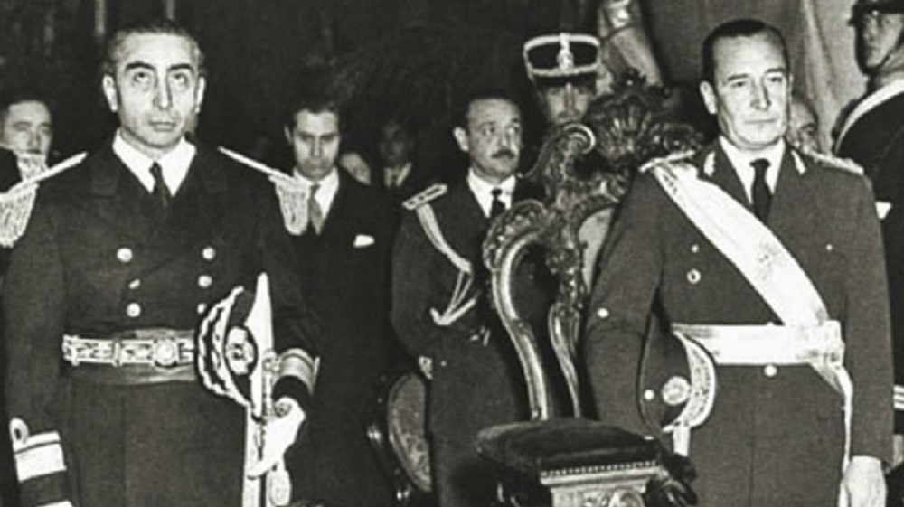
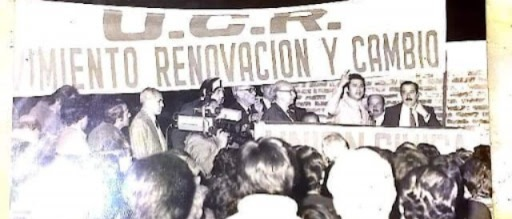
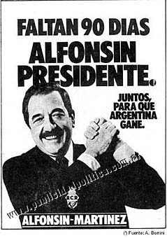
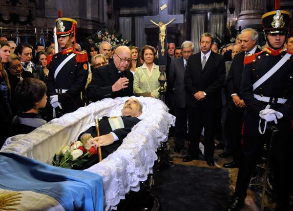

Nacimiento(1927)
Nació el 12 de marzo de 1927 en Chascomus, provincia de Buenos Aires

Nació el 12 de marzo de 1927 en Chascomus, provincia de Buenos Aires

Sus padres fueron Ana María Foulkes y Serafín Raúl Alfonsín

Sus estudios primarios en la Escuela Normal Regional de Chascomús y sus estudios secundarios en el Liceo Militar General San Martín, donde egresó con el grado de subteniente de reserva Se graduó como abogado en la Facultad de Derecho de la Universidad de Buenos Aires en 1950

A los 19 años en 1946 se afilió a la Unión Cívica Radical. Desde joven se intereso por la política y la defensa de los valores democráticos. Años después fue Presidente de la Nación

Raul Alfonsin y su esposa, Maria Lorenza Barreneche, tuvieron seis hijos: Raul Felipe, Ana Maria, Ricardo Luis, Maria Marcela, Maria Ines y Javier Ignacio

Fue diputado provincial y luego diputado nacional en dos ocasiones. Estos cargos marcaron el crecimiento de su carrera politica dentro de la UCR

Fue detenido en dos oportunidades por gobiernos militares debido a su actividad política y su defensa de la participación democrática

Alfonsin creo este movimiento que pertenecia a la UCR. Su objetivo era modernizar el partido, promover la participación de jovenes y fortalecer los valores democraticos
Alfonsin fue uno de los fundadores de esta organización que promovió la defensa de los derechos fundamentales y denunció las violaciones cometidas durante los años de violencia política y la posterior dictadura militar

Lidero la campaña de la UCR con un mensaje centrando en la democracia, derechos humanos y el respeto a la Constitucion. El 30 de Octubre 1983 gano con el 51,74% frente al peronismo

Fue electo presidente de la Nación como candidato de la Unión Cívica Radical. Asumió el 10 de diciembre de ese año, marcando el retorno de la democracia luego de la última dictadura militar en Argentina. Debido a la crisis económica y social, dejó el cargo unos meses antes de finalizar su mandato

Fallecio el 31 de marzo de 2009 a los 82 años. Debido a un cancer de pulmon. Fue reconocido como uno de los principales referentes de la democracia